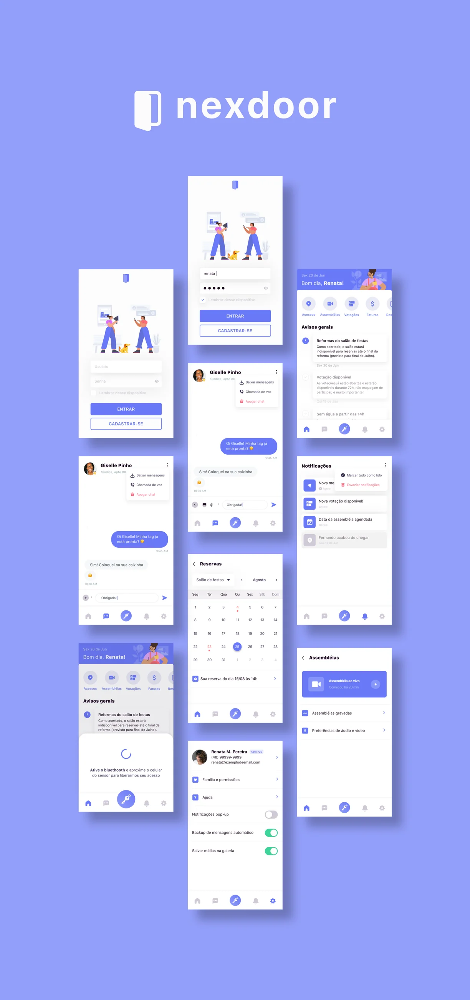
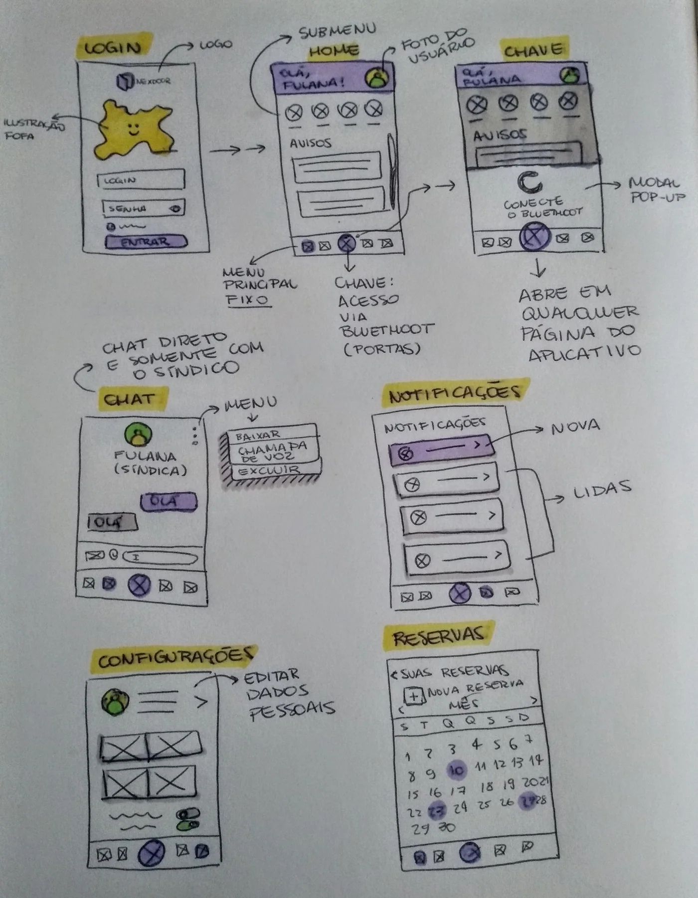
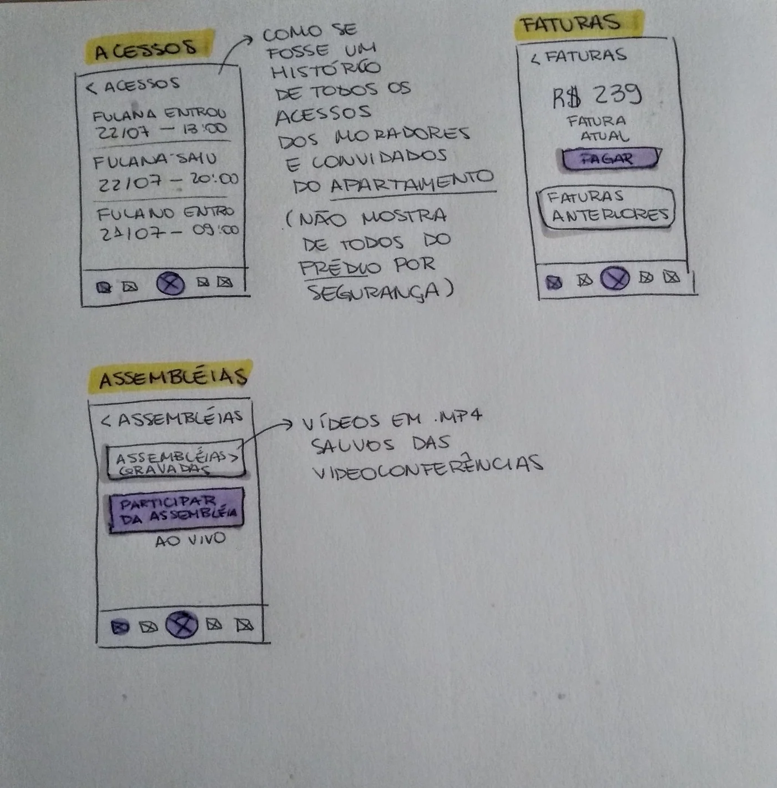

A condominium communication app concept developed through survey research, wireframes and a functional prototype.

An independent conceptual project co-created with Lucas Martins do Nascimento. Survey of 24 respondents (not representative of all residents).
Nexdoor is an independent project developed by me and my partner Lucas Martins do Nascimento (UX Researcher). We did the whole app: the app's name, logo, interface with all the screens, a fully functional prototype, and we loved the experience.
Our motivation ⚡️
Condominium communication can be unpleasant for many people. Personal conflicts, lack of time, and lack of interest in long meetings are behind the low engagement of thousands of residents in condominium assemblies.
In addition, we live in a period marked by a dangerous pandemic, under which social distance is highly recommended (or even mandatory), and is another factor that hinders communication and interaction between residents. Therefore, new models of condominium communication can be investigated.
Survey analysis 📊
The survey was structured with 12 questions, mapping the sociodemographic and technological profile, as well as experiences and opinions about condominium communication.
Among the participation criteria, the participant should be a condominium resident and be at least 18 years of age. To acquire the answers, the survey was released to 10 individuals from our personal and professional network. To avoid selection bias, these respondents were asked to spread the survey link to other potential participants, a method known as "snowball".
Sociodemographic results 👧👩🦳👴
The survey counted on the collaboration of 24 respondents, with participation from eight states. The mean was 30.3 years (standard deviation of 11.5 years). The youngest age was 18 years old and a maximum of 64 years old.
Technological profile 📠
All respondents showed an intense use of smartphones. In the question: "How often do you use smartphones?", 5 responded that they use the device frequently and 19 responded always. Then, the frequency of use for different categories of applications was investigated. The participants have a profile engaged in the use of several applications with features and proposals similar to the app that is intended to develop around condominium communication.
In the next question, we investigated how the participants' experiences with video calls occur. As a result, most of the sample makes positive use of video calls (50%). Only 12.5% indicated a negative or regular relationship with video calls. This data suggests that the implementation of video calls is a resource accessible to most respondents.
Condominium communication 📢
First, it was found that most participants do not attend condominium assemblies. Among the main reasons for not attending meetings, complaints about time were the two most prominent alternatives. The participants' perspective on communication with liquidators in different contexts is assessed as regular or positive. Therefore, a margin is identified to improve this relationship in search of excellence.
In addition, 79.2% were more attracted by the possibility of participating in an online condominium assembly, only 20.8% would still opt for face-to-face participation.
It is important to highlight that this research was carried out in a period of social distance caused by the pandemic crisis of COVID. Thus, the greater density of choice for the online option may be inflated by the scenario we are in.
Most of the functionalities planned for a condominium communication app were considered important. The negative highlight occurred with the chat function with residents, suggesting that this feature should not be prioritized.
Survey conclusions 📋
- The technological profile of the evaluated public is receptive to the use of apps related to condominium communication.
- The emphasis on negative experiences and opinions about condominium communication illustrates a fertile scenario for changes and innovations.
- The public was receptive to the resources and features proposed to reshape condominium communication in their routines.
Drafts and wireframes ✏️



